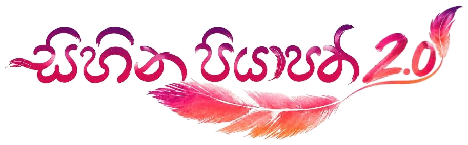
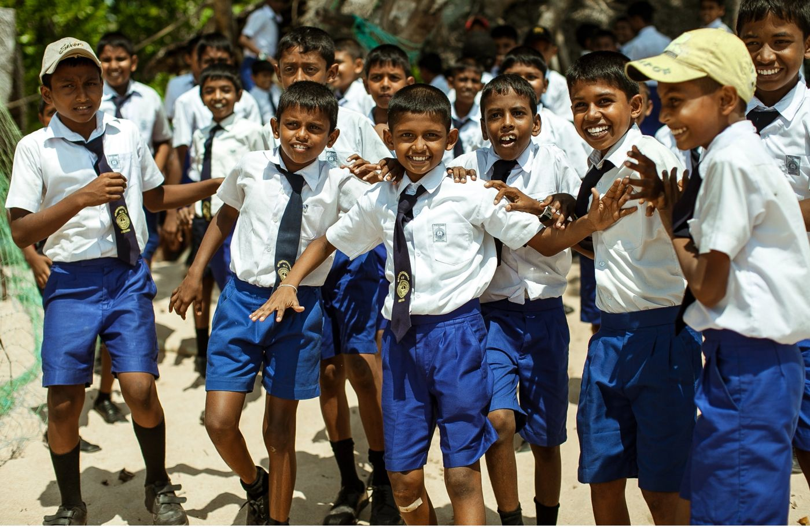

Exercise books
A full set of the CR, single-ruled, square-ruled and drawing books each child needs for the school year.
A CSR project by SAB Campus of CA Sri Lanka

Giving wings to little dreams.
On 4 November 2026 we handed over books, stationery, story books, uniform fabric and grocery packs to the students of AM/Maha/Wahawa Primary School, Padiyathalawa. None of it would have happened without you. Thank you.

Project completed
Every book, pencil, rupee and grocery pack you gave reached the children of Wahawa Primary School. From all of us in the 03A Weekday Batch, and from the students, teachers and parents in Padiyathalawa: thank you.
Below you can watch the day for yourself and read our final report, which shows how every donation was used.
Accountability
What we collected, what we spent, and what reached the children: our complete report on Sihina Piyapath 2.0.
With gratitude
The people, batches and businesses who made Sihina Piyapath 2.0 possible. If we've missed your name, please message us and we'll add it.
About the project
Sihina Piyapath (සිහින පියාපත්, "wings of dreams") is run by the 2nd-year undergraduates of the 03A Weekday Batch, Department of Business Analytics, SAB Campus of CA Sri Lanka. Last year we supported 45 children in Theldeniya. This year we went to Padiyathalawa.
A full set of the CR, single-ruled, square-ruled and drawing books each child needs for the school year.
Colour pencils, pastels, pencils, glue, scissors, rulers, sharpeners and erasers for every student.
Enough white and blue fabric for new uniforms for all 14 girls and 12 boys.
Meet the school
A small primary school in Padiyathalawa, in the Ampara District, where most families struggle to afford even basic school supplies. The classrooms are open-sided and simply furnished, but full of children who love to learn.
Where it started
On 6 November 2025, our batch took books, stationery and uniform fabric to CP/Theldeniya Mahadoraliyadda Primary School in Theldeniya. Batch-mates, lecturers, other batches and well-wishers made it happen.
The people behind it
03A Weekday Batch · Department of Business Analytics · SAB Campus of CA Sri Lanka
With the guidance of Ms. Isuri Samarawickrama, Head of the Department of Business Analytics.